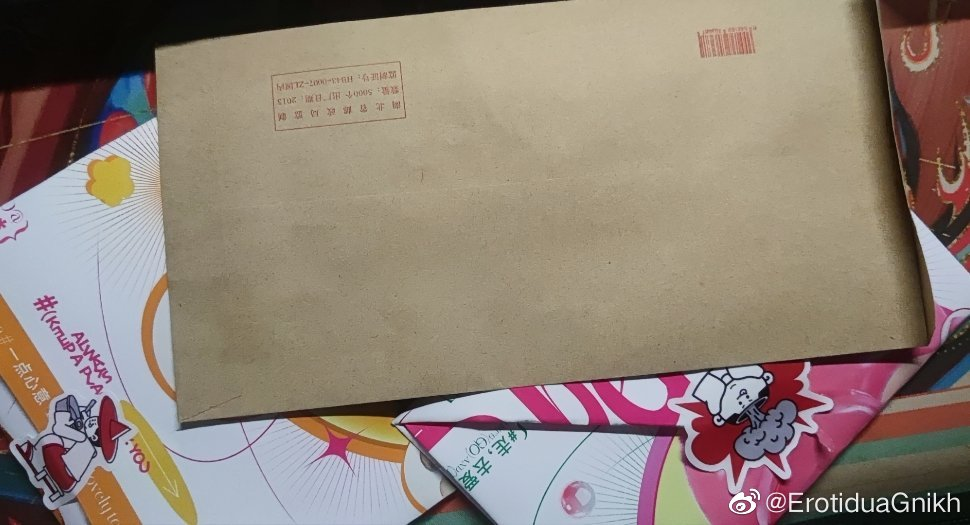

晚安
答辩结束了，感觉拉了，总想着自己能做得更好一点，非得给大学点一个圆满的句点，但可惜还是没有做到。感受到了人的参差，知道自己这种水平能做成这样也该知足了，可总感觉心底里有一种莫名其妙的执念。人也该长大了。
谢谢小陈小张，曲曲萱萱的花 ，确实是没有想到。今天很幸福，很圆满，可能是确实没捧过花罢。现在宿舍里全是花的清香。
，确实是没有想到。今天很幸福，很圆满，可能是确实没捧过花罢。现在宿舍里全是花的清香。
开始准备毕业要送的礼物和信了，小礼物是计划之中，信倒是想了很久。没有想到fz明天就不得不离开武汉了，很难过，前几天论文截稿的时候说出去吃醉得意的时候没去成，晚上想去没拉够人，没想到就因为突然的变故，这餐在武汉可能是再也吃不到了——突然就变成了永久的遗憾。
唉，本来想准备的小礼物还没做好，也来不及送了，手头上也没有贺卡，给fz写了封信，明天送他去火车站。 唉，好难过，太突然了。大晚上哭了，写信也不知道自己在写什么。
唉，好难过，太突然了。大晚上哭了，写信也不知道自己在写什么。
四年怎么过得这么快啊。突然间大家都要各奔东西，从此就是各自人生的过客。以后大概也许真的见不到了吧，慢慢遗忘。来也匆匆去也匆匆。几年之后，不过是称呼从“黄志翔”变成“那个谁谁谁”，最后变成“他们”的一份子罢。
唉。自作多情。
答辩结束了，感觉拉了，总想着自己能做得更好一点，非得给大学点一个圆满的句点，但可惜还是没有做到。感受到了人的参差，知道自己这种水平能做成这样也该知足了，可总感觉心底里有一种莫名其妙的执念。人也该长大了。
谢谢小陈小张，曲曲萱萱的花
开始准备毕业要送的礼物和信了，小礼物是计划之中，信倒是想了很久。没有想到fz明天就不得不离开武汉了，很难过，前几天论文截稿的时候说出去吃醉得意的时候没去成，晚上想去没拉够人，没想到就因为突然的变故，这餐在武汉可能是再也吃不到了——突然就变成了永久的遗憾。
唉，本来想准备的小礼物还没做好，也来不及送了，手头上也没有贺卡，给fz写了封信，明天送他去火车站。
四年怎么过得这么快啊。突然间大家都要各奔东西，从此就是各自人生的过客。以后大概也许真的见不到了吧，慢慢遗忘。来也匆匆去也匆匆。
唉。自作多情。
- 